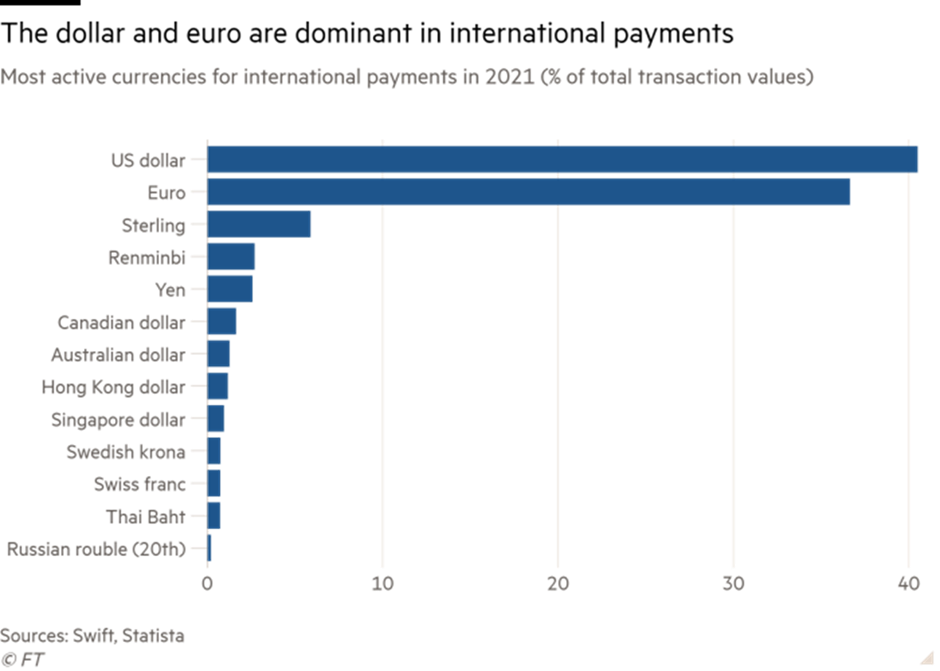

32 Currencies
Roberts
The US dollar is not being gradually replaced by the euro, or the yen, or even the Chinese renminbi, but by a batch of minor currencies.

The share of reserves held in US dollars by central banks has dropped by 12 percentage points since the turn of the century, from 71 percent in 1999 to 59 percent in 2021. But this fall has been matched by a rise in the share of what the IMF calls ‘non-traditional reserve currencies’, defined as currencies other than the ‘big four’ of the US dollar, euro, Japanese yen and British pound sterling, namely such as the Australian dollar, Canadian dollar, Chinese renminbi, Korean won, Singapore dollar, and Swedish krona. All this suggests is that the shift in international currency strength after the Ukraine war will not be into some West-East bloc, as most argue, but instead towards a fragmentation of currency reserves.
Roberts (2023) A multipolar World
32.1 Exchange Rate
Tooze
An increase in the price of oil - the lead commodity of the world economy - now improves the terms of trade of the United States. And the terms of trade are strongly correlated with the strength of the dollar.
As the BIS team comments, whereas
“in the past higher energy prices were associated with worsening US terms of trade and a weaker dollar, today these patterns are reversed. A similar positive relationship between the terms of trade and the exchange rate is commonly found for commodity exporters, such as Australia and Canada, but not for commodity importers (see Cashin (2004), Rees (2023)). This suggests that – unless the United States becomes a major net energy importer once more – the combination of higher commodity prices and a stronger US dollar could be more common in the future than it was in the past.”
The result of this change in the “commodity price-dollar nexus” is extremely toxic for global growth:
Movements in the US dollar now compound the effect of commodity prices changes on the global economy. Commodity price rises tend to stoke inflation and choke off growth in commodity-importing economies, while dollar appreciation tends to do the same outside the United States, especially in emerging market economies. The stagflationary effects of higher commodity prices exert themselves in part through higher consumer prices, which squeeze household incomes, and rising production costs for firms, which dampen investment. The stagflationary effects of a stronger dollar come through its dominant role in global trade and finance.2 The recent confluence of such incidents has significantly increased the risk that weak growth will coincide with high inflation. Consistent with this, inflation surged worldwide while growth fell in in 2022.
The stagflationary impact of the dollar-commodity nexus is compounded by the similar impact of a strong dollar by way of the “credit channel”. A strengthening dollar tightens global dollar-credit and tends to strangle global investment and trade finance.
What does it mean for the dollar system that the US is now a major energy exporter?
One of the constants in the global economy we have known since the 1970s has been the waxing and waning of the flow of petrodollars generated by US oil imports. As the BIS comments:
For decades, major oil exporters have priced their oil trades in US dollars. Often petrodollars have been recycled back into US Treasury debt and other US assets, reinforcing the dollar’s reserve currency status, as manifested in its dominant role in global trade and finance and its outsize impact on global economic and financial conditions. Less US oil imports could mean fewer petrodollars flowing into the global financial system. This could reduce liquidity and affect currency choices in trade invoicing and reserve management.
Above all politics and geopolitics that are intruding into an otherwise well-balanced and well-defined system of global finance centered on the dollar. Those forces do, of course, impact global finance, but the dollar system that they are shaping is not in itself equal, balanced or unpolitical. Rather it is highly unequal, crisis-prone and constantly changing. It is by the interaction between macroeconomics, macrofinance and geoeconomics that the dollar system’s future will be decided.
32.1.1 Exchange Rate as Randow Walk
Charles
We analyze the efficiency market hypothesis [EMH thereafter] of major Euro exchange rates. The EMH states that, at any time, prices fully reflect all available and relevant information. Therefore, given only past price and return data, the current price is the best predictor of the future price, and the price change or return is expected to be zero (Fama, 1970; 1991). This is the essence of the weak-form EMH, which implies a random walk, and which has been the most commonly tested hypothesis in the empirical literature.
If the nominal exchange rate follows a random walk process, then the market is weak-form efficient, and therefore not predictable. This means that it is impossible for an exchange trader to generate excess returns over time through speculation. Alternately, if the nominal exchange rate is predictable, then the market is not weak-form efficient, which means that exchange traders can generate abnormal returns through speculation.
The standard variance ratio [VR thereafter] test or its improved modifications have been used to test market efficiency. All studies on the random walk hypothesis [RWH thereafter] examine foreign exchange rates against the US dollar.
We re-examine the random walk behavior of major Euro exchange rates in two ways. First, this study is based on an extensive sample. We study daily and weekly data for major Euro exchange rates over the 1999-2008 period.
We analyze the weak-form from both data frequencies because a market can be considered to be perfectly weak-form efficient if it is found to behave randomly at any level of data frequency. We thus avoid the shortcomings of high and medium-low frequency data. Indeed, using high frequency data to estimate the market efficiency of developed markets allows us to take into account some of their characteristics, such as high trading volume and better information. However, it also implies biases for developing markets, such as non-trading and asynchronous prices, which are overcome with medium-low frequency data.
We apply new VR tests proposed by Chen and Deo (2006) and Belaire-Franch and Contreras (2004), which are more powerful than those applied in previous studies, to examine the behavior of major Euro exchange rates. More precisely, Chen and Deo (2006) suggested a power transformation of the VR statistic, which corrects a well-known problem with the VR test, namely that the VR statistic is biased and right skewed in finite samples. Wright (2000) proposes an alternative to conventional asymptotic VR tests using rank tests, which are exact tests whose sampling distributions do not entail asymptotic approximations. Belaire-Franch and Contreras (2004) developed a multiple version of Wright’s (2000) rank tests that overcomes the problem of size distortions when applying individual VR tests for several holding periods.
Conclusion
This study employed new variance ratio tests to evaluate the random walk behavior of eleven major Euro exchange rates over the period of January 4, 1999, to May 30, 2008, using daily and weekly data. These tests, which are robust to heteroskedasticity and non-normality, are the Chen and Deo (2006) power-transformed tests and the multiple Belaire-Franch and Contreras (2004) rank and sign-based tests.
The results suggest that Euro-based exchange rates for the major trading countries (Australia, Canada, Japan, UK, US, New Zealand, Korea and Switzerland) follow the random walk hypothesis at both data frequencies, and are therefore significantly and perfectly weak-form efficient, suggesting no excess returns over time through speculation. This outcome is not necessarily the case for non-major trading currencies, especially for the Swedish kroner, where the random walk hypothesis is rejected at daily and weekly frequencies. Finally, the weak-form efficiency is rejected for daily data but is not rejected for weekly data for Singapore and Norway, suggesting the possibility of abnormal returns through speculation on the short horizon.
Charles (2009) Testing for random walk behavior in Euro exchange rates
32.2 Hegomonic Currency
Feygin
Is a trade deficit is necessary for a reserve currency to be a dominant currency?
What makes a dominant currency is neither the composition of reserves nor invoicing but the denomination of private debt.
Private debt is not defined by any kind of legal basis, but rather by issuing debt in money you cannot print.
From this point of view, so-called “Eurobonds” issued by sovereigns are as private as corporate bonds.
You had dominant currencies that were anchored by exporters: the United States after 1945 (I would go back further and say after 1916) and the British in the 19th Century. What allowed both these countries to be dominant currencies while being big exporters was that they managed a system through the capital account rather than the current account. In other words, they exported their savings aggressively to other countries while maintaining a trade surplus. The fact that the United States is a trade deficit hegemonic currency is not a rule but a special case.The system is possible. However, is it stable?
The UK system was extremely unstable. It could operate for a very long time because it was a commodity currency (gold), and thus the UK would be forced to export capital.
The 19th century UK was a very strange bird indeed. It ran big deficits vis-a-vis its colony – India – to feed itself (and starve others) because it was a very small, highly productive island. Think of it as Japan more than America. By the end of the pound system, it was losing the ability to be an exporter already but did not have the market depth to be a hegemonic importer.
The American system is also strange. First, we can divide it into three periods. First is the pre-hegemonic period in the 19th Century, where the United States was a capital importer. Even then, the US is a massive domestic market relative to most other economies. Its import of capital results in a lot of financial instability but also very rapid technological installation, which, in turn, deepens the domestic market and leads to institutional innovation in the form of the modern corporation.
In the second period, after WWI, the US was still a hegemonic exporter and captial exporter, and as Adam Tooze argues in The Deluge, this system worked for quite a bit: until it didn’t. That is how you got the Great Depression. A big part of that is that the US, as a hegemonic exporter, cannot manage the intricate political economy that is required to assure both general financial stability, growth, and the domestic politics of an export economy.
After WWII the US is very much the most hegemonic exporter possible because the rest of the world is devastated by war. However, what we see after WWII is that through a series of intentional policies and improvisations, the United States slowly allowed the rest of the world to build up a deficit against it. It actively exported its capital to allow others to export goods back into it. It slowly but surely moved to a deficit hegemon position and then, with a lot of pain and struggle, rebuilt the monetary system into one that is relatively stable over the next fifty years.
In Charles Kindleberger’s work, he defines the function of a monetary hegemon as playing a global coordinating role by running a deficit to provide markets for distressed goods and long-term liquidity, as well as creating both long-term credit taking in deposits and short term liquidity by lending into crises. This is a theoretical statement about a systemic stability condition based on a theory of how monetary relations interact with real ones.
You can meet this stability condition as a hegemonic exporter if you are one because of your very high productivity relative to everyone else. But that productivity would have to be something truly revolutionary, like being a continent-sized economy that did not suffer the consequences of two world wars or unleashing the industrial revolution. So from the point of view of special conditions in the world of Kindleberger’s theory, we can have two special cases. Just as under Keynesian assumptions, we can have a world where Say’s Law holds; we can also have a world with a hegemonic exporter. However, from the point of view of political economy, the hegemonic importer is much more probable.
This gets me into the issue of Chinese Belt and Road loans. I think China could be doing a lot in solidifying itself as a constructive force in the world by lending its massive surpluses to the developing world. However, I think it is doing it wrong either on purpose or because of, as Nils would argue Cold War-like assumptions. Most Chinese lending is still going to infrastructure. This is not a bad thing per se. Infrastructure is critical to development and has multipliers. But it doesn’t get you too far unless you can create a profit. Profits come from sales. In a Say’s Law version of the world, supply creates its own demand, so you will have profits from the act of industrializing. This is also the world of the Lewis development model, where you will have modernization and, thus, a release of labor into more productive industries.
However, in a Keynesian world, demand is autonomous of supply and is very related to social structure. So you will have some level of demand created by an infrastructure multiplier, but unless it is managed in the right way, it will have diminishing returns. Demand has to come in from other sources. Either domestic consumption if you are a big market or from exports (aka importing other people’s demand). China’s lending, as far as I can tell, is not creating long-term demand for exports that is consistent with full employment in its borrower’s economy. Doing so would gradually turn China into a hegemonic importer, and that would create domestic issues.
Here again, I used a theory (Kalecki and Harrod’s demand-side growth models) to inform the special cases possible under the theory.